Manual do SyncRide
Para cada ecrã: o que podes fazer, o que não dá, e como fazer — passo a passo, com imagens reais.
O que é
O SyncRide é a plataforma onde geres toda a operação de transfers: viagens, condutores, frota, parceiros e automações de email. Há três áreas: o Gestor (no computador), a app do Condutor (telemóvel) e o Portal do Parceiro.
Entrar
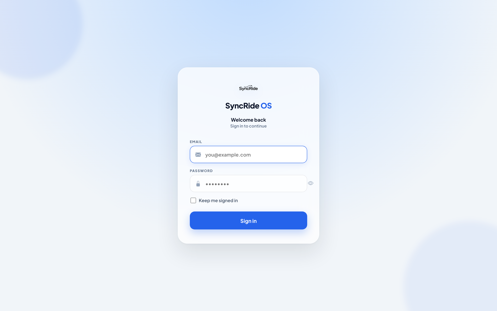
Como entrar
- Escreve o teu email e palavra-passe.
- Liga "Keep me signed in" se quiseres ficar autenticado neste aparelho.
- Carrega em Sign in — o sistema leva-te ao painel certo conforme o teu tipo de conta.
Painel Gestor
A primeira coisa que vês: viagens de hoje, total da semana, gráfico de desempenho e próximas viagens.
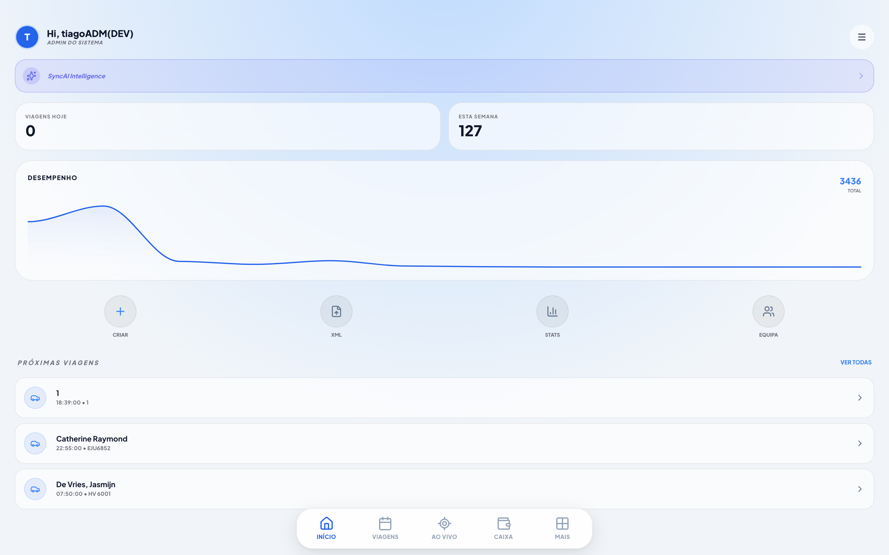
Podes
- Ver viagens de hoje e da semana
- Acompanhar o desempenho no gráfico
- Saltar para criar viagem, XML, stats ou equipa
Não dá aqui
- Editar viagens (faz-se em Viagens)
- Atribuir condutores (Viagens ou Quadro)
Viagens Gestor
O centro de operações — onde crias, atribuis, editas e delegas viagens.
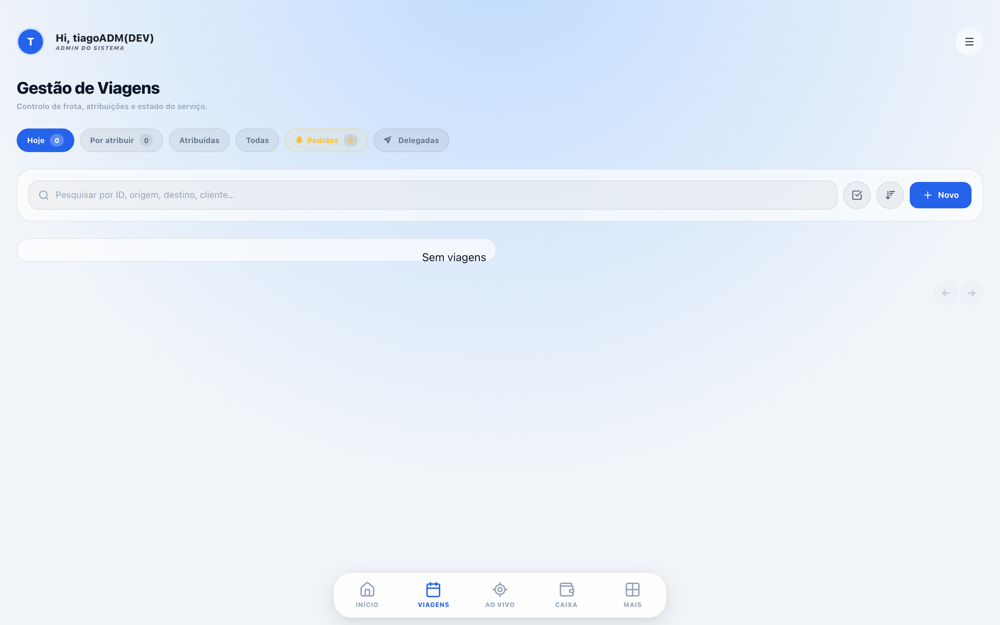
Como criar uma viagem
- Carrega em + New.
- Preenche data, hora, recolha, destino e passageiros.
- (Opcional) escolhe já o condutor, ou deixa "later" para atribuir depois.
- Guarda — aparece no separador Hoje ou Por atribuir.
Como atribuir um condutor
- Na linha da viagem, clica no ícone azul de condutor.
- Escolhe o condutor da lista.
- A viagem passa a Atribuídas e o condutor recebe-a na app.
Como delegar a um parceiro
- Clica no ícone ↗ (só aparece se tiveres parcerias ativas).
- Escolhe a empresa parceira.
- A viagem sai da tua lista normal e fica em Delegadas; o condutor é desassociado.
Podes
- Filtrar por Hoje, Por atribuir, Atribuídas, Todas, Pedidos, Delegadas
- Pesquisar por cliente, voo, recolha ou destino
- Editar, eliminar e ver o histórico de cada viagem
- Aprovar/rejeitar pedidos de parceiros
Não dá
- Atribuir um condutor de outra empresa (a não ser que seja partilhado)
- Editar uma viagem já delegada (tens de a reverter primeiro)
Quadro de agenda Gestor
Planeamento visual por arrastar e largar. À esquerda, as viagens sem condutor; ao centro, o calendário.
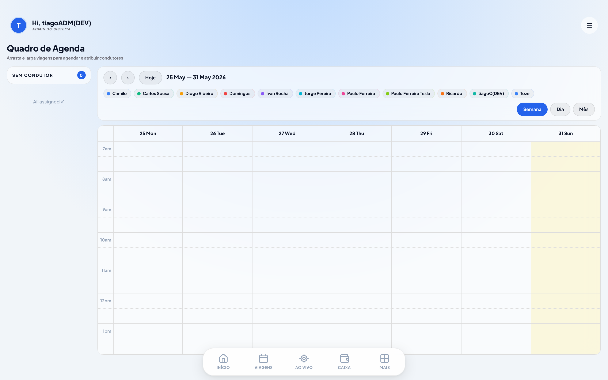
Como agendar arrastando
- Agarra uma viagem do painel "Sem condutor".
- Larga-a no dia e hora pretendidos no calendário.
- No modal, escolhe o condutor (ou deixa sem) e confirma.
Como reagendar
- Arrasta um evento já no calendário para outra hora ou dia.
- A data/hora atualiza-se automaticamente — não precisas de gravar.
Podes
- Ver por Semana, Dia ou Mês
- Filtrar por condutor (clica na cor dele na legenda)
- Clicar num evento para ver detalhe, mudar condutor ou remover atribuição
Parcerias Gestor
Colabora com outras empresas: quando tens viagens a mais, passa-as a um parceiro e acerta contas no fim do mês.
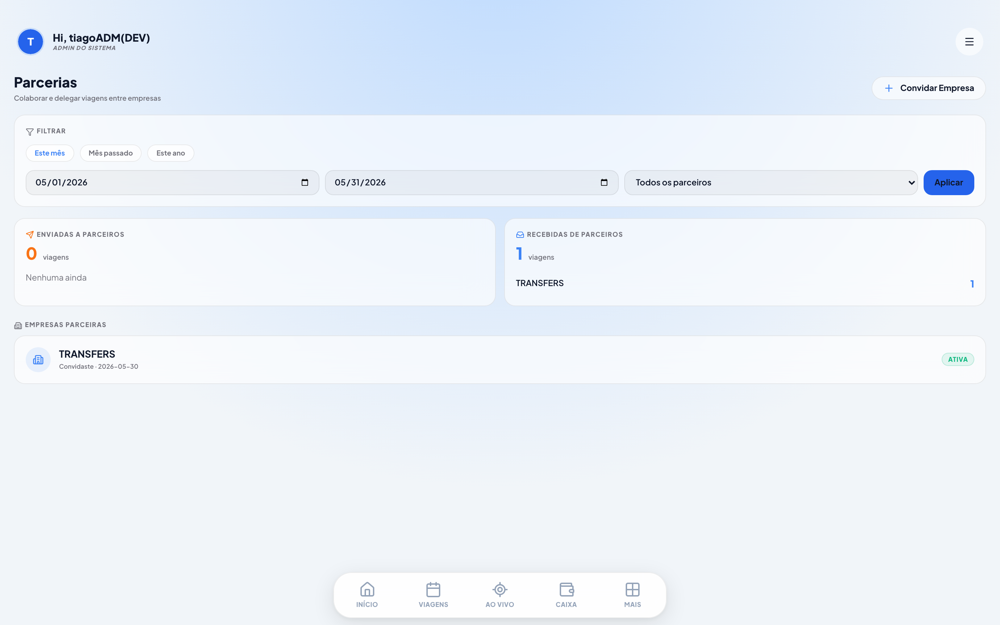
Como criar uma parceria
- Carrega em Convidar empresa e escolhe a empresa.
- A outra empresa vê o convite e aceita.
- A partir daí, podem delegar viagens um ao outro.
Como reverter uma delegação
- Quem enviou: separador Delegadas → botão Reverter.
- Quem recebeu: na viagem → botão Devolver.
- A viagem volta ao dono original.
Podes
- Filtrar as estatísticas por data e por empresa
- Ver quantas viagens enviaste e recebeste (ideal para faturação mensal)
No-shows Gestor
Quando um passageiro não aparece, o condutor regista com foto e GPS. Aqui consultas todos.
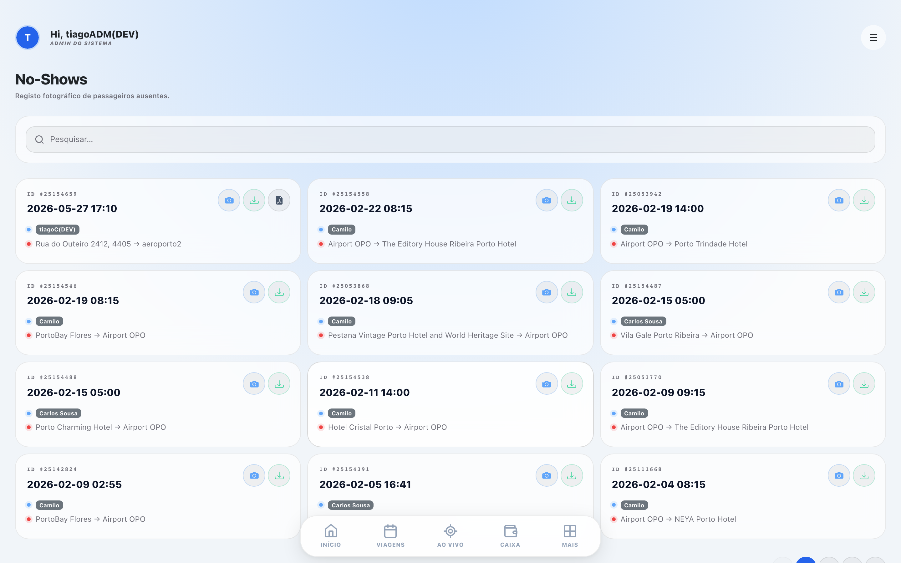
Podes
- Ver data, condutor, cliente e rota de cada no-show
- Abrir e descarregar a foto-prova
- Obter o relatório PDF (também é enviado por email no momento)
Equipa & convites Gestor
Gere administradores, condutores e parceiros — e partilha condutores entre empresas.
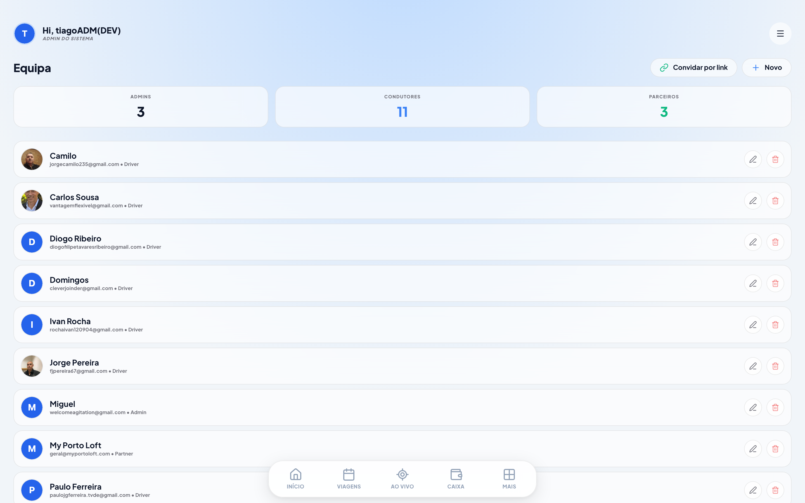
Como criar uma conta manualmente
- New → preenche nome, email, telefone e função.
- Define ou gera uma palavra-passe.
- Guarda — a pessoa já pode entrar.
Como convidar por link (a pessoa preenche os dados)
- Carrega em Convidar por link.
- Escolhe a função e uma etiqueta (ex: "Condutor turno manhã") e Gerar link.
- Copia e envia o link. A pessoa abre-o, preenche os próprios dados e termina o registo.
Como partilhar um condutor de outra empresa
- Cria um condutor com o email que já existe noutra empresa.
- O sistema deteta e pergunta se queres adicioná-lo à tua empresa.
- Confirma — ele passa a receber as tuas viagens também (e vê a empresa de cada uma).
Frota Gestor
Os veículos da empresa, com documentação e condutor associado.
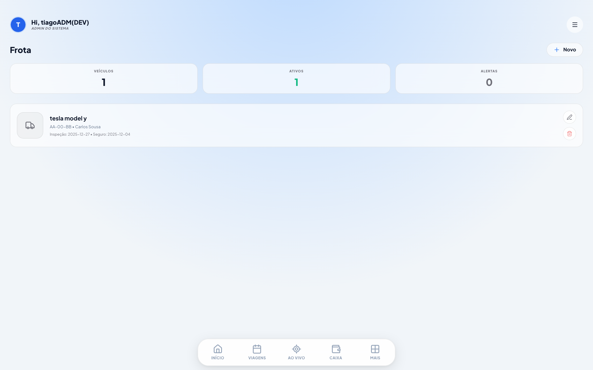
Podes
- Adicionar, editar e remover veículos
- Associar um condutor a cada veículo
- Ver alertas de documentação (inspeção, seguro)
Financeiro Gestor
Receitas das viagens e despesas da operação, mês a mês.
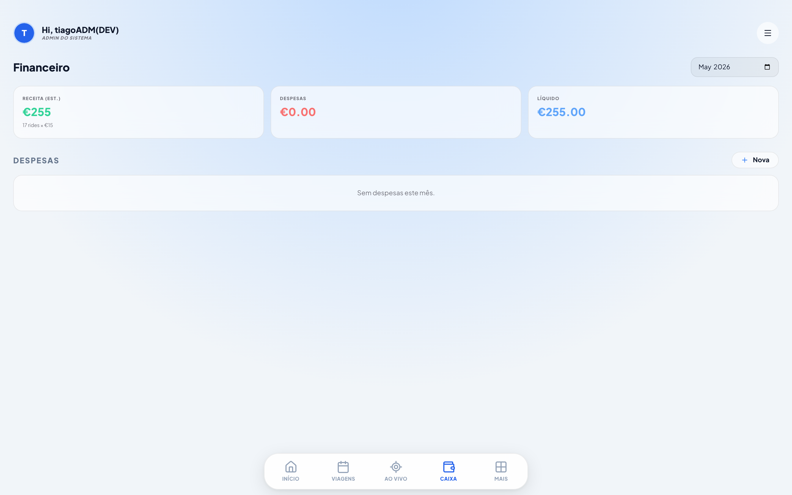
Como registar uma despesa
- Abre Financeiro e escolhe o mês.
- Adiciona a despesa com valor e descrição.
- Anexa o comprovativo (foto/PDF).
Estatísticas Gestor
Desempenho por condutor e por período.
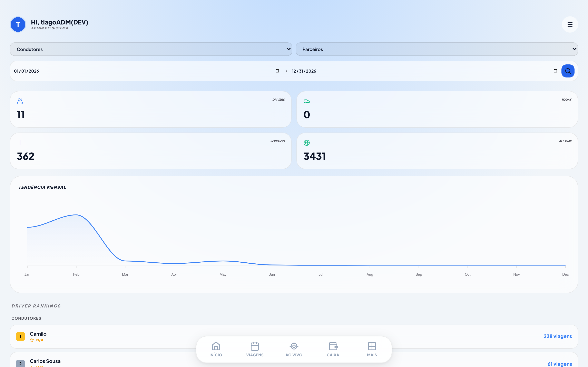
Podes
- Filtrar por condutor e intervalo de datas
- Ver totais, evolução mensal e ranking
Automações de email Gestor
Configura os emails automáticos: relatório de viagem, voucher, alerta de no-show e escala diária.
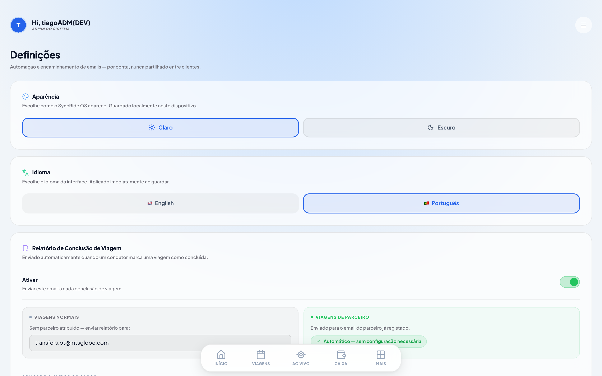
Como configurar uma automação
- Liga/desliga a automação no interruptor.
- Define o email da agência e as listas de CC.
- No no-show, separa o CC que recebe sempre do CC só em viagens normais.
- Guarda.
Mapa ao vivo Gestor
Localização dos condutores em serviço, em tempo real.
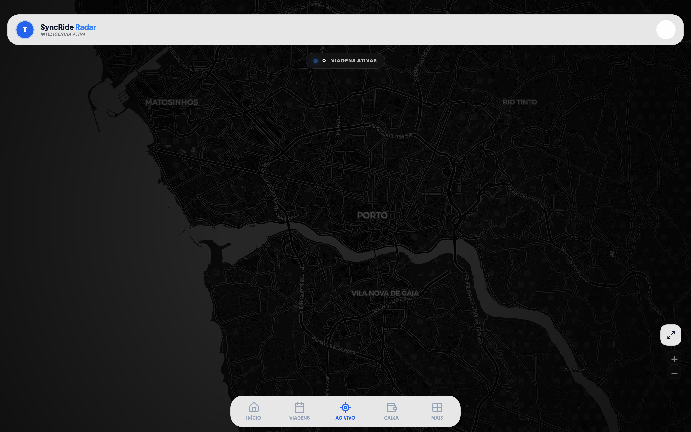
Viagens (app) Condutor
No telemóvel: as viagens de hoje, ontem e amanhã.
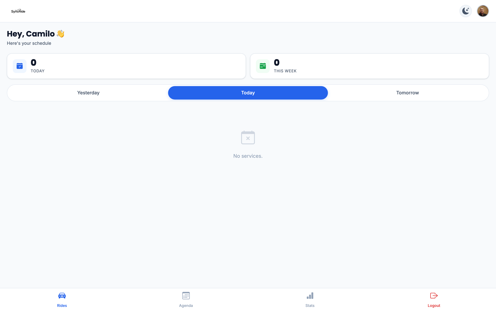
Como tratar uma viagem
- Abre a viagem do dia.
- Atualiza o estado à medida que avanças (a caminho, no local, em viagem, concluída).
- Se o passageiro não aparecer, regista o no-show com foto; no fim, carrega o voucher.
Agenda Condutor
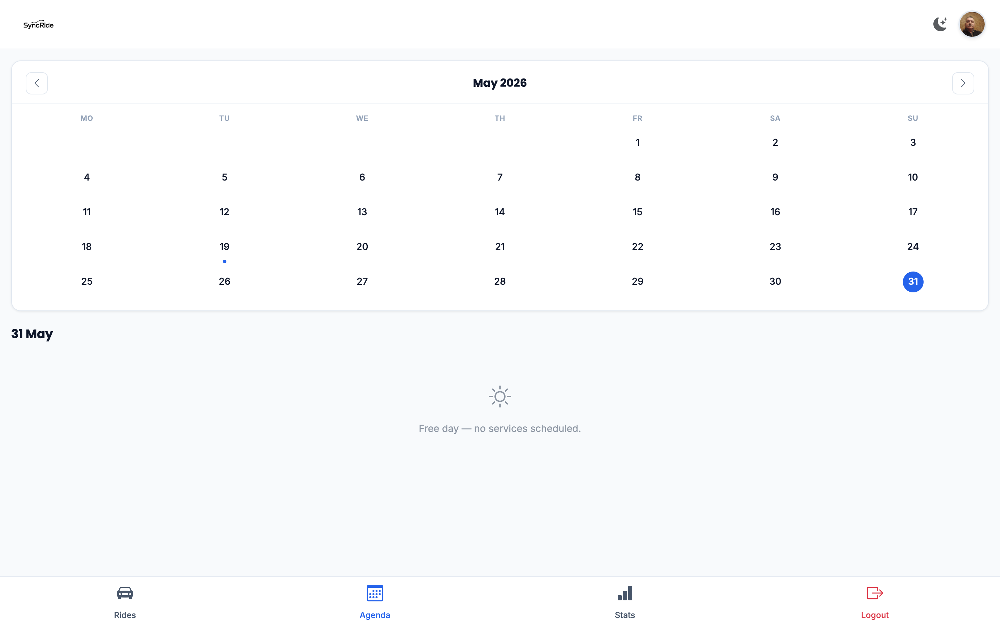
Podes
- Navegar por dia e ver as viagens atribuídas
- Ver recolha, destino, tipo e a empresa de cada viagem
Estatísticas Condutor
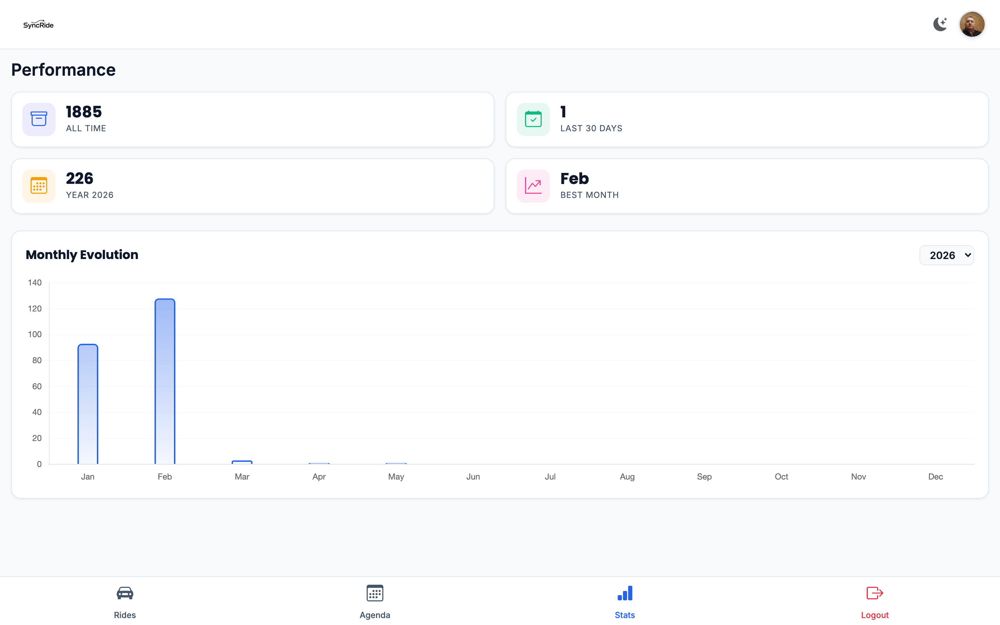
Podes
- Ver o teu total de viagens por período
- Acompanhar a evolução mensal e a tua classificação
Portal do parceiro Parceiro
Para hostels e agências pedirem e acompanharem serviços.
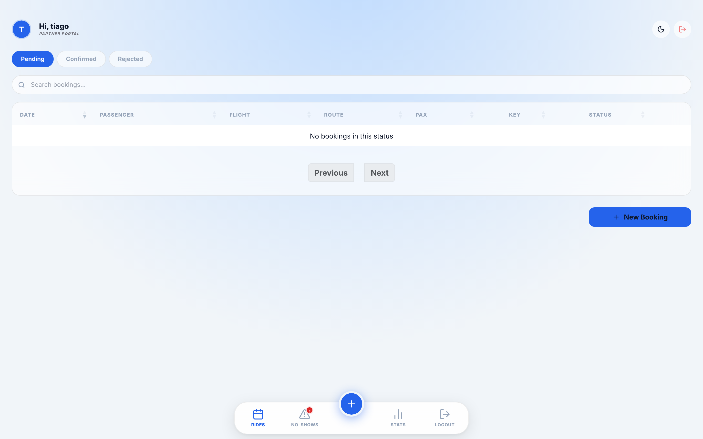
Como pedir um serviço
- Cria o pedido com data, recolha, destino e passageiros.
- O pedido fica pendente até o gestor aprovar.
- Acompanhas o estado e os no-shows das tuas viagens.
Não dá
- Atribuir condutores (isso é do gestor)
- Ver viagens de outras empresas
Mudar palavra-passe
Onde, em cada perfil
- Gestor: menu → "Mudar palavra-passe".
- Condutor: toca na foto de perfil no topo.
- Parceiro: link "Mudar palavra-passe" na barra de topo.
- Confirma a atual, escreve a nova (mín. 6 caracteres) e guarda.